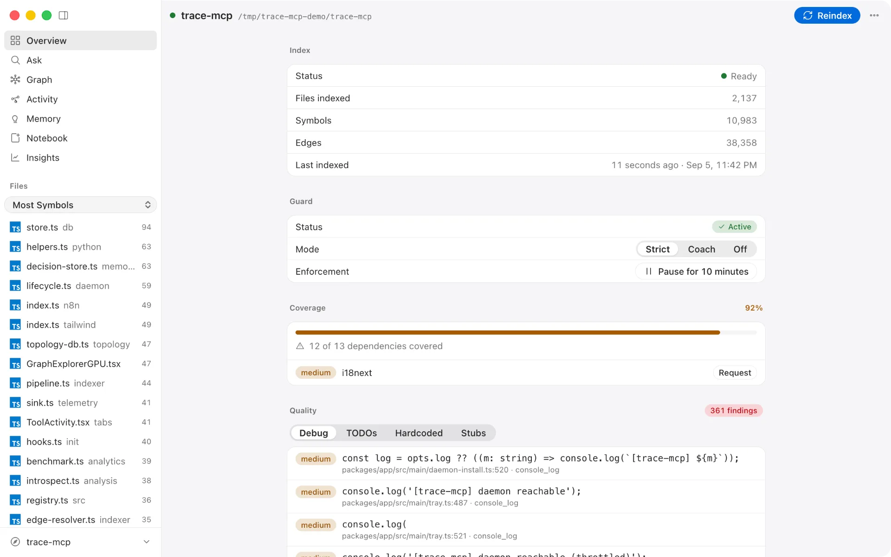
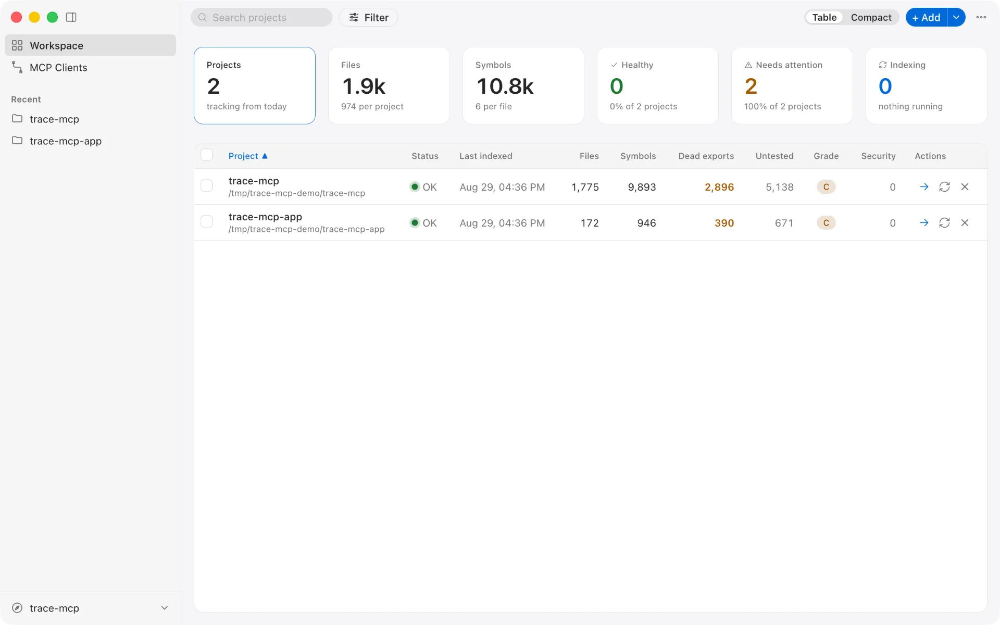

Recomputation → Reuse v… MIT
Precomputed code intelligence for AI coding agents
trace-mcp is an MCP server that indexes your repository once so AI coding agents stop re-reading the same files — {{ site.data.pr_context_bench.median_savings_pct }}% fewer input tokens to review a pull request.
Open source 100% local Claude Code Cursor Codex Windsurf
The first figure is measured on other people's code — {{ site.data.pr_context_bench.pr_count }} merged pull requests, SHAs pinned, run script and the {{ site.data.pr_context_bench.loss_count }} cases where it barely paid off all published: PR review context benchmark. The other two come from our own instrumentation, measured against baseline agent runs that re-read files and re-traverse dependencies on every turn — what that figure covers, and where it is roughly zero.
{{ site.data.savings.tokens_display }} tokens saved across installs that
share usage, as of {{ site.data.savings.refreshed }} — {{ site.data.savings.usd_display }}
at the {{ site.data.savings.price_model }} input rate
(${{ site.data.savings.price_usd_per_mtok }}/Mtok). Self-reported by anonymous, opt-out
pings, not audited; how this is measured.
Agents recompute instead of reusing.
Measure what the agent reads, explain why it reads it twice, remove the repeated work, and keep it from coming back.
get_change_impact call instead of 80 Greps and 190 reads.
What the agent queries instead of your files.
Computed once — every symbol, every edge, across {{ site.data.counts.languages }} languages in one directed graph. The agent queries it instead of rediscovering it each turn.
Framework-aware — routes to controllers, Inertia to Vue, Eloquent to migrations. {{ site.data.counts.frameworks }} integrations capture edges the agent would otherwise reconstruct from raw files.
Compiler-grade where it matters — optional LSP enrichment with tsserver, pyright, gopls for call resolution that survives across calls.
Reused, not rebuilt — 300ms file-watcher debounce and content-hashed incremental reindex keep the graph fresh without redoing finished work.
Connect your repository
Run trace-mcp add in your repo. Frameworks are detected automatically — Laravel, Django, Next.js, NestJS, Rails, {{ site.data.counts.frameworks }} in total.
Index into a graph
Tree-sitter parses symbols, plugins resolve framework edges, optional LSP enriches with compiler-grade call data. Stored locally in SQLite + FTS5.
Expose to your agents
{{ site.data.counts.tools }} MCP tools become available in Claude Code, Cursor, Windsurf, VS Code — or any custom agent that speaks MCP over stdio or HTTP.
Recomputation becomes reuse.
How the indexer, graph and plugin system fit together: Architecture → · every language and framework it understands: Supported stack →
+ 133 more — impact analysis, decision memory, security, architecture. Full reference →
Search results for the agent to re-read
- Returns files and snippets — the agent still has to traverse them
- Same query, same output, every turn — no reuse across calls
- No unified graph; framework edges are rediscovered from text
- Bolted onto agent workflows, not designed for them
A precomputed graph the agent reuses
- {{ site.data.counts.tools }} tools that return answers, not files to read
- One incremental index, queried per task — not rebuilt per turn
- Single graph across every symbol, edge, and framework
- Native MCP protocol, zero adapter code
The difference shows up on the second question, not the first.
Side-by-side tables against every comparable tool: Comparisons →
- / 01Computed once, queried many times — a graph, not a text index that gets re-ranked every turn.
- / 02Framework-aware edges across {{ site.data.counts.frameworks }} integrations — routes, ORMs, views, DI captured up front, not rediscovered from raw files.
- / 03Tools that return answers, not snippets to read —
get_change_impact,get_call_graph,find_usagesover a precomputed structure. - / 04Reuse survives the session — incremental reindex, decision memory, agent-behavior rules keep cost from rebounding.
A text index is re-ranked on every query. A graph is computed once and traversed — so the second question about a repo costs a fraction of the first.


Graph traversal instead of file-by-file reading. Agents ship features with fewer broken changes and less context thrash.
Plug trace-mcp into internal dev tools. Your copilot answers "what calls this?" in one call instead of ten.
Every codemod previewed, every rename graph-verified. PR bots comment with symbol-level diff and blast radius.
Repository-level access control
One SQLite database per project under ~/.trace-mcp/. Nothing is written inside your repo unless you opt in.
Secure handling of code
No API keys, no cloud services. Bundled ONNX embeddings. Fully offline after first install.
Safe modification workflows
Every refactor has a dry-run preview and diff review. Guard hook blocks destructive operations from agents.
/ Install Globally
Installs the trace CLI from the trace-mcp package (the older trace-mcp command keeps working). ~30 seconds. Requires Node.js 20 or newer. Prefer pnpm or yarn? pnpm add -g trace-mcp / yarn global add trace-mcp work too.
/ Wire Into Your Agent
One-time global setup. Auto-detects installed MCP clients (Claude Code, Cursor, Windsurf, Claude Desktop, Codex, JetBrains AI, …), wires trace into each, installs the guard hook, and adds routing rules to ~/.claude/CLAUDE.md. Run once per machine.
/ Register Each Project
Detects frameworks, builds the per-project index, registers the project. The file watcher keeps the graph incrementally fresh from here on. Re-run in every repo you want trace to understand.
Stdio vs HTTP, semantic search, .traceignore and every other option: Configuration →
What is the best MCP server for giving Claude Code codebase context?
+
npm install -g trace-mcp, and works over stdio or HTTP with any MCP-compatible client, including Claude Code, Cursor, and Windsurf.
How do I reduce Claude Code token usage?
+
get_outline, get_symbol, find_usages, and get_change_impact that return only the relevant symbols and relationships instead of whole files. Teams typically see 40–50% fewer tokens per session, since navigation, dependency lookups, and impact analysis become single tool calls instead of multi-file exploration. Install it with npm install -g trace-mcp, point Claude Code at it over MCP, and it indexes locally with no cloud calls or API keys required.
Do I need API keys or a cloud account?
+
Where does the index live?
+
~/.trace-mcp/ — one SQLite database per project, plus shared decision and topology databases. Nothing is written into your project directory unless you opt in with .traceignore or .trace-mcp/.config.json.
Does it work for monorepos and multi-service codebases?
+
subproject_add_repo links separate repositories into a unified topology. Cross-service impact analysis traces API calls across service boundaries with confidence scores.
How does it stay up-to-date?
+
What about my framework? Is it supported?
+
~/.trace-mcp/plugins/. Most plugins are ~200–500 lines.
Is it safe to run on production codebases?
+
apply_rename, apply_codemod) require explicit confirmation and support dry-run preview. The guard hook blocks accidental destructive operations from your AI agent.
Recomputation → Reuse.
Precomputed code intelligence for AI coding agents.
AI systems pay repeatedly for work they have already done: every turn re-derives structure the agent held a few steps earlier. trace-mcp precomputes that structure once and serves it over MCP. Code is where the repetition is most expensive today, which is where we started.
Index once,
query for the rest of the session.
~40–50% lower token usage on average, and up to 94–99% on structured tasks. One install, and every MCP-capable agent in the project gets the same graph.